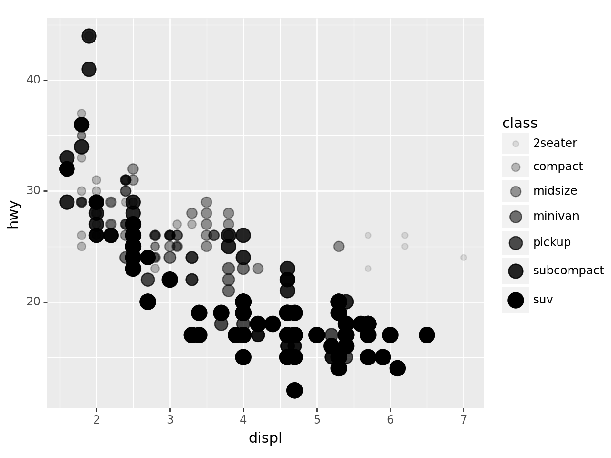
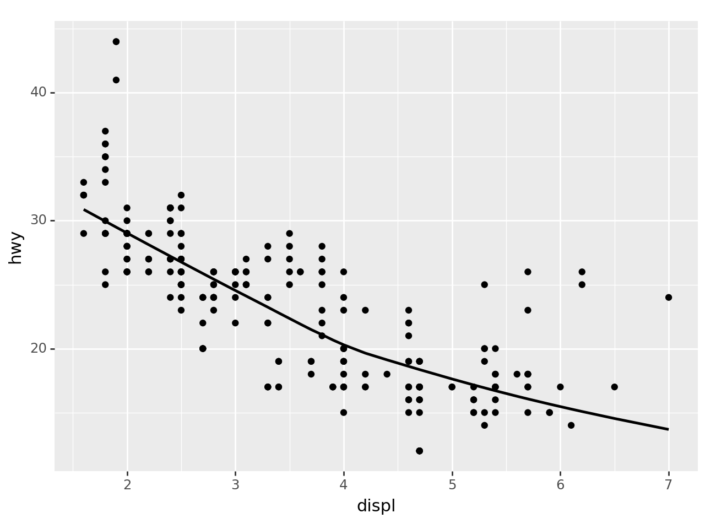
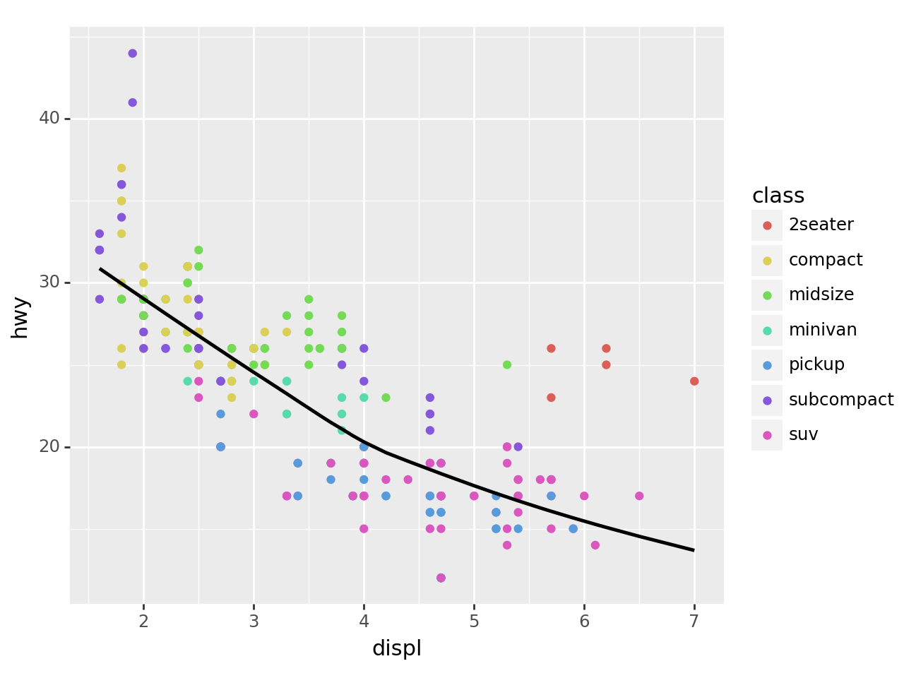
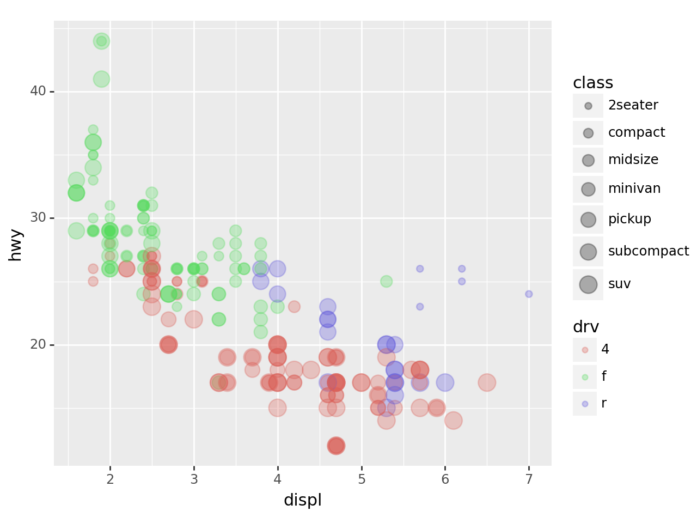
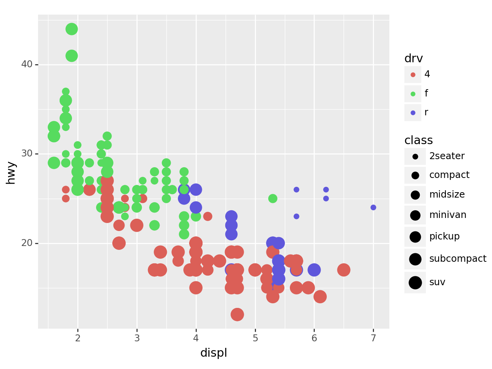
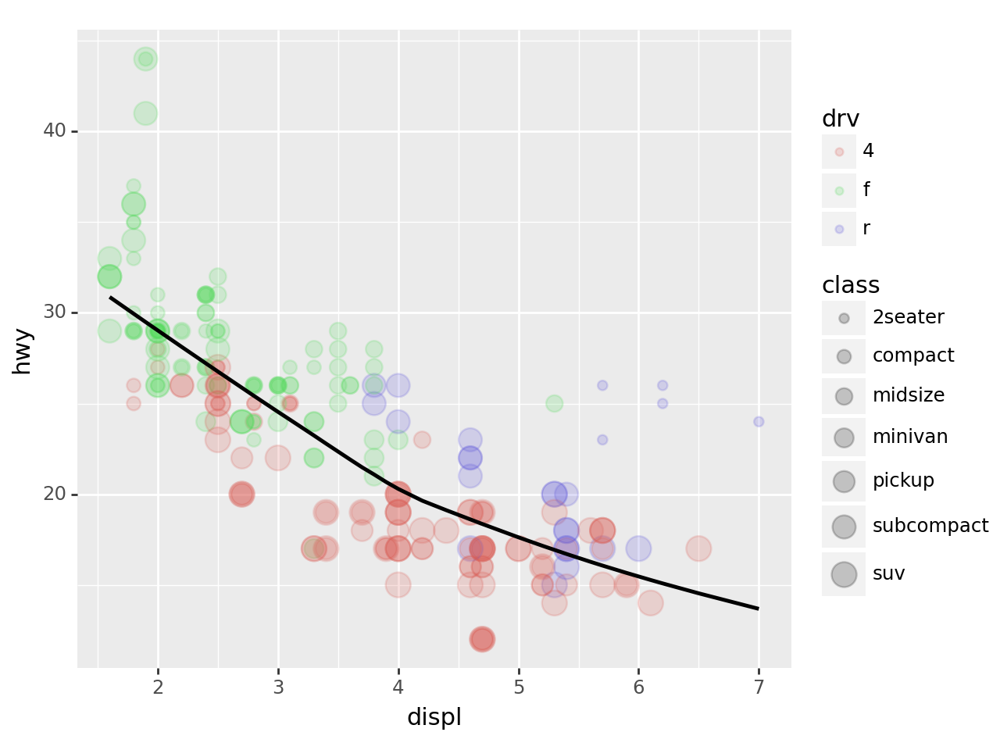
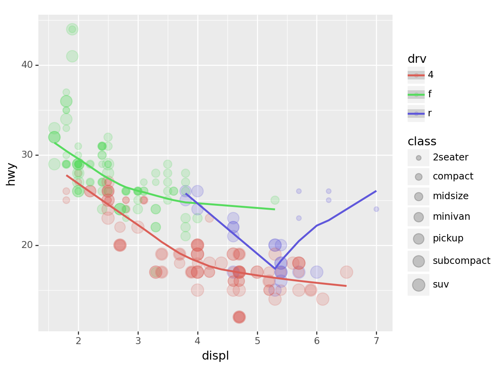
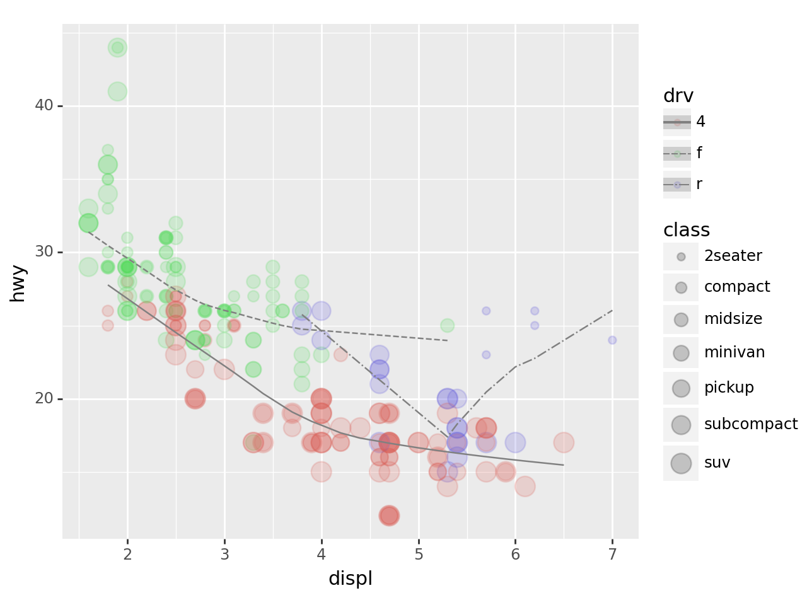
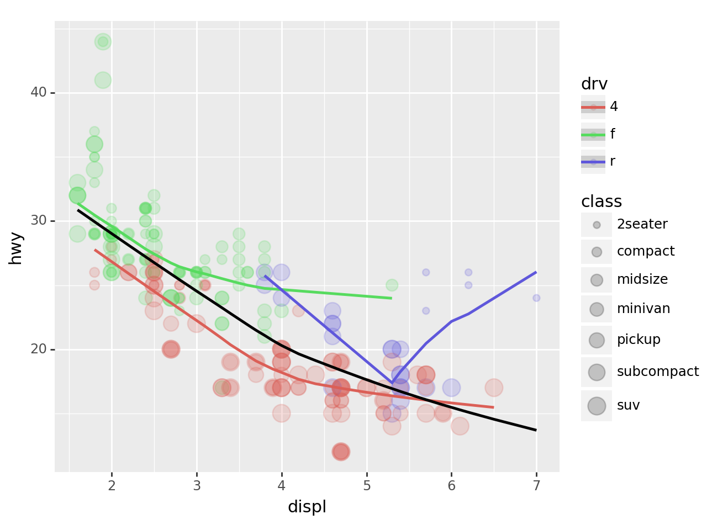
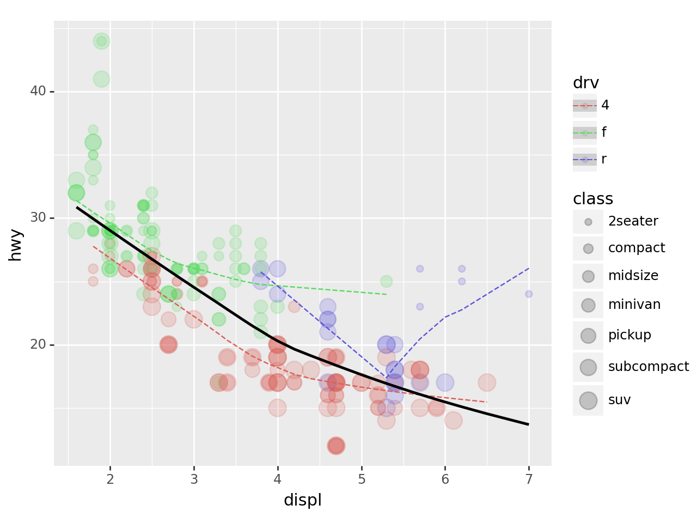

Lesson 14: ggplot2

강의영상
read mpg data
- ref: https://r4ds.had.co.nz/index.html
| manufacturer | model | displ | year | cyl | trans | drv | cty | hwy | fl | class | |
|---|---|---|---|---|---|---|---|---|---|---|---|
| 0 | audi | a4 | 1.8 | 1999 | 4 | auto(l5) | f | 18 | 29 | p | compact |
| 1 | audi | a4 | 1.8 | 1999 | 4 | manual(m5) | f | 21 | 29 | p | compact |
| 2 | audi | a4 | 2.0 | 2008 | 4 | manual(m6) | f | 20 | 31 | p | compact |
| 3 | audi | a4 | 2.0 | 2008 | 4 | auto(av) | f | 21 | 30 | p | compact |
| 4 | audi | a4 | 2.8 | 1999 | 6 | auto(l5) | f | 16 | 26 | p | compact |
| ... | ... | ... | ... | ... | ... | ... | ... | ... | ... | ... | ... |
| 229 | volkswagen | passat | 2.0 | 2008 | 4 | auto(s6) | f | 19 | 28 | p | midsize |
| 230 | volkswagen | passat | 2.0 | 2008 | 4 | manual(m6) | f | 21 | 29 | p | midsize |
| 231 | volkswagen | passat | 2.8 | 1999 | 6 | auto(l5) | f | 16 | 26 | p | midsize |
| 232 | volkswagen | passat | 2.8 | 1999 | 6 | manual(m5) | f | 18 | 26 | p | midsize |
| 233 | volkswagen | passat | 3.6 | 2008 | 6 | auto(s6) | f | 17 | 26 | p | midsize |
234 rows × 11 columns
- 깃허브 저장소에 아예 데이터만 따로 모아서 관리하는 것도 좋은 방법입니다.
data 설명
- displ: 자동차의 엔진크기
- hwy: 연료의 효율, 동일한 연료로 얼마나 멀리 가느냐?
p9를 이용한 산점도 (2차원)
python에서: plotnine을 이용한 산점도
| manufacturer | model | displ | year | cyl | trans | drv | cty | hwy | fl | class | |
|---|---|---|---|---|---|---|---|---|---|---|---|
| 0 | audi | a4 | 1.8 | 1999 | 4 | auto(l5) | f | 18 | 29 | p | compact |
| 1 | audi | a4 | 1.8 | 1999 | 4 | manual(m5) | f | 21 | 29 | p | compact |
| 2 | audi | a4 | 2.0 | 2008 | 4 | manual(m6) | f | 20 | 31 | p | compact |
- 산점도 해석: 엔진크기가 클수록 효율이 낮음.
- 빠르게 그리기: data=와 mapping=은 생략가능함

객체지향적인 느낌으로 산점도 그리기
step1: 도화지를 준비한다.
step2 변수와 에스테틱사이의 맵핑을 설정한다.
step3 점들의 집합을 만든다. 즉 포인트 지옴을 만든다.
- geom_point(): 점들을 그려! 어떻게?
a1에서 설정된 표를 보고
step4 도화지와 지옴을 합친다.

p9를 이용한 산점도 (3차원)
- 데이터를 다시 관찰
| manufacturer | model | displ | year | cyl | trans | drv | cty | hwy | fl | class | |
|---|---|---|---|---|---|---|---|---|---|---|---|
| 0 | audi | a4 | 1.8 | 1999 | 4 | auto(l5) | f | 18 | 29 | p | compact |
| 1 | audi | a4 | 1.8 | 1999 | 4 | manual(m5) | f | 21 | 29 | p | compact |
| 2 | audi | a4 | 2.0 | 2008 | 4 | manual(m6) | f | 20 | 31 | p | compact |
| 3 | audi | a4 | 2.0 | 2008 | 4 | auto(av) | f | 21 | 30 | p | compact |
| 4 | audi | a4 | 2.8 | 1999 | 6 | auto(l5) | f | 16 | 26 | p | compact |
- class도 함께 plot에 표시하면 데이터를 탐색할때 좀 더 좋을 것 같다.
산점도 + 점크기변경
산점도 + 투명도변경
산점도 + 투명도/점크기를 동시에 적용
/home/cgb2/anaconda3/envs/py310/lib/python3.10/site-packages/plotnine/scales/scale_alpha.py:73: PlotnineWarning: Using alpha for a discrete variable is not advised.
/home/cgb2/anaconda3/envs/py310/lib/python3.10/site-packages/plotnine/scales/scale_size.py:49: PlotnineWarning: Using size for a discrete variable is not advised.
산점도 + 형태
산점도 + 색깔
객체지향적 느낌으로?
산점도 + 색깔 + 적합선
- 일단 색깔이 없는 포인트 지옴부터 연습
/home/cgb2/anaconda3/envs/py310/lib/python3.10/site-packages/plotnine/stats/smoothers.py:330: PlotnineWarning: Confidence intervals are not yet implemented for lowess smoothings.
- point1(색깔없는 포인트 지옴)을 point2(색깔있는 포인트 지옴)으로 언제든지 바꿔치기 가능!
/home/cgb2/anaconda3/envs/py310/lib/python3.10/site-packages/plotnine/stats/smoothers.py:330: PlotnineWarning: Confidence intervals are not yet implemented for lowess smoothings.
- 명령어로 한번에 그리기
ggplot(data=df) + \
geom_point(mapping=aes(x='displ',y='hwy',color='class')) + \
geom_smooth(mapping=aes(x='displ',y='hwy'))/home/cgb2/anaconda3/envs/py310/lib/python3.10/site-packages/plotnine/stats/smoothers.py:330: PlotnineWarning: Confidence intervals are not yet implemented for lowess smoothings.
- 공통적인 맵핑규칙은 ggplot()쪽으로 빼기도 한다. (figure를 선언하는 곳에서 공통으로 선언함)
p9를 이용한 산점도 (4차원)
- 데이터를 살펴보자.
| manufacturer | model | displ | year | cyl | trans | drv | cty | hwy | fl | class | |
|---|---|---|---|---|---|---|---|---|---|---|---|
| 0 | audi | a4 | 1.8 | 1999 | 4 | auto(l5) | f | 18 | 29 | p | compact |
| 1 | audi | a4 | 1.8 | 1999 | 4 | manual(m5) | f | 21 | 29 | p | compact |
| 2 | audi | a4 | 2.0 | 2008 | 4 | manual(m6) | f | 20 | 31 | p | compact |
| 3 | audi | a4 | 2.0 | 2008 | 4 | auto(av) | f | 21 | 30 | p | compact |
| 4 | audi | a4 | 2.8 | 1999 | 6 | auto(l5) | f | 16 | 26 | p | compact |
산점도 + 점크기변경 + 색깔
- drv (전륜, 후륜, 4륜 구동)에 따라서 데이터를 시각화 하고 싶다.
ggplot(data=df, mapping=aes(x='displ',y='hwy'))\
+ geom_point(mapping=aes(
size='class',
color='drv'
),alpha=0.3)/home/cgb2/anaconda3/envs/py310/lib/python3.10/site-packages/plotnine/scales/scale_size.py:49: PlotnineWarning: Using size for a discrete variable is not advised.
- 모든 \(x\)에 대하여 붉은색 점들이 대부분 초록색과 보라색 점들에 비하여 아래쪽에 있음 \(\to\) 4륜구동방식이 연비가 좋지 않음
산점도 + 점크기변경 + 색깔 (객체지향버전)
- 맵핑규칙
{'x': 'displ', 'y': 'hwy', 'color': 'drv', 'size': 'class'}- 아래와 같이 선언해도 괜찮음
/home/cgb2/anaconda3/envs/py310/lib/python3.10/site-packages/plotnine/scales/scale_size.py:49: PlotnineWarning: Using size for a discrete variable is not advised.
- 그림의 전체적인 투명도를 조절하면 좋겠음
산점도 + 점크기변경 + 색깔 + 선추가
/home/cgb2/anaconda3/envs/py310/lib/python3.10/site-packages/plotnine/scales/scale_size.py:49: PlotnineWarning: Using size for a discrete variable is not advised.
/home/cgb2/anaconda3/envs/py310/lib/python3.10/site-packages/plotnine/stats/smoothers.py:330: PlotnineWarning: Confidence intervals are not yet implemented for lowess smoothings.
산점도 + 점크기변경 + 색깔 + drv별로 선추가
- 맵핑규칙
({'x': 'displ', 'y': 'hwy'},
{'x': 'displ', 'y': 'hwy', 'color': 'class'},
{'x': 'displ', 'y': 'hwy', 'color': 'drv', 'size': 'class'})/home/cgb2/anaconda3/envs/py310/lib/python3.10/site-packages/plotnine/scales/scale_size.py:49: PlotnineWarning: Using size for a discrete variable is not advised.
/home/cgb2/anaconda3/envs/py310/lib/python3.10/site-packages/plotnine/stats/smoothers.py:330: PlotnineWarning: Confidence intervals are not yet implemented for lowess smoothings.
/home/cgb2/anaconda3/envs/py310/lib/python3.10/site-packages/plotnine/stats/smoothers.py:330: PlotnineWarning: Confidence intervals are not yet implemented for lowess smoothings.
/home/cgb2/anaconda3/envs/py310/lib/python3.10/site-packages/plotnine/stats/smoothers.py:330: PlotnineWarning: Confidence intervals are not yet implemented for lowess smoothings.
- 선의 색깔을 동일하게 하고 선의 타입을 변경하여 drv를 표시하고 싶다면?
({'x': 'displ', 'y': 'hwy'},
{'x': 'displ', 'y': 'hwy', 'color': 'class'},
{'x': 'displ', 'y': 'hwy', 'color': 'drv', 'size': 'class'},
{'x': 'displ', 'y': 'hwy', 'color': 'drv'})/home/cgb2/anaconda3/envs/py310/lib/python3.10/site-packages/plotnine/scales/scale_size.py:49: PlotnineWarning: Using size for a discrete variable is not advised.
/home/cgb2/anaconda3/envs/py310/lib/python3.10/site-packages/plotnine/stats/smoothers.py:330: PlotnineWarning: Confidence intervals are not yet implemented for lowess smoothings.
/home/cgb2/anaconda3/envs/py310/lib/python3.10/site-packages/plotnine/stats/smoothers.py:330: PlotnineWarning: Confidence intervals are not yet implemented for lowess smoothings.
/home/cgb2/anaconda3/envs/py310/lib/python3.10/site-packages/plotnine/stats/smoothers.py:330: PlotnineWarning: Confidence intervals are not yet implemented for lowess smoothings.
- 전체적인 추세선도 추가하고 싶다면?
/home/cgb2/anaconda3/envs/py310/lib/python3.10/site-packages/plotnine/scales/scale_size.py:49: PlotnineWarning: Using size for a discrete variable is not advised.
/home/cgb2/anaconda3/envs/py310/lib/python3.10/site-packages/plotnine/stats/smoothers.py:330: PlotnineWarning: Confidence intervals are not yet implemented for lowess smoothings.
/home/cgb2/anaconda3/envs/py310/lib/python3.10/site-packages/plotnine/stats/smoothers.py:330: PlotnineWarning: Confidence intervals are not yet implemented for lowess smoothings.
/home/cgb2/anaconda3/envs/py310/lib/python3.10/site-packages/plotnine/stats/smoothers.py:330: PlotnineWarning: Confidence intervals are not yet implemented for lowess smoothings.
/home/cgb2/anaconda3/envs/py310/lib/python3.10/site-packages/plotnine/stats/smoothers.py:330: PlotnineWarning: Confidence intervals are not yet implemented for lowess smoothings.
- 그려보니까 역시 drv별로 그려지는 추세선은 색깔별로 구분하는게 좋겠음.
/home/cgb2/anaconda3/envs/py310/lib/python3.10/site-packages/plotnine/scales/scale_size.py:49: PlotnineWarning: Using size for a discrete variable is not advised.
/home/cgb2/anaconda3/envs/py310/lib/python3.10/site-packages/plotnine/stats/smoothers.py:330: PlotnineWarning: Confidence intervals are not yet implemented for lowess smoothings.
/home/cgb2/anaconda3/envs/py310/lib/python3.10/site-packages/plotnine/stats/smoothers.py:330: PlotnineWarning: Confidence intervals are not yet implemented for lowess smoothings.
/home/cgb2/anaconda3/envs/py310/lib/python3.10/site-packages/plotnine/stats/smoothers.py:330: PlotnineWarning: Confidence intervals are not yet implemented for lowess smoothings.
/home/cgb2/anaconda3/envs/py310/lib/python3.10/site-packages/plotnine/stats/smoothers.py:330: PlotnineWarning: Confidence intervals are not yet implemented for lowess smoothings.
- 고차원을 변수를 표현할 수 있는 무기는 다양하다.
- 산점도(포인트지옴): 점의크기, 점의형태, 점의색깔, 점의투명도
- 라인플랏(스무스지옴,라인지옴): 선의형태, 선의색깔, 선의굵기
결론
- 잘 훈련한다면 여러가지 형태의 고차원 그래프를 우리도 그릴 수 있다. (마치 미나드처럼)
- 해들리위컴은 이러한 방법을 체계적으로 정리했다고 보여진다.
- 해들리위컴: 그래프는 데이터 + 지옴 + 맵핑(변수와 에스테틱간의 연결) + 스탯(통계) + 포지션 + 축 + 패싯그리드 7개의 조합으로 그릴 수 있다.
- 내생각: 지옴과 맵핑만 잘 다루어도 아주 다양한 그래프를 그릴 수 있음.